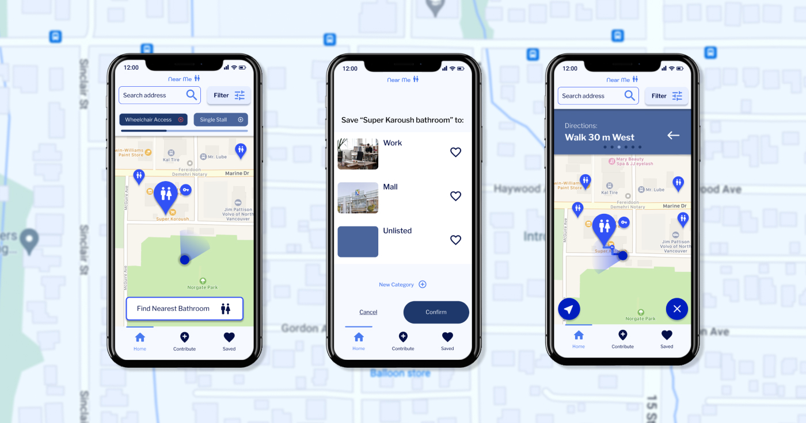
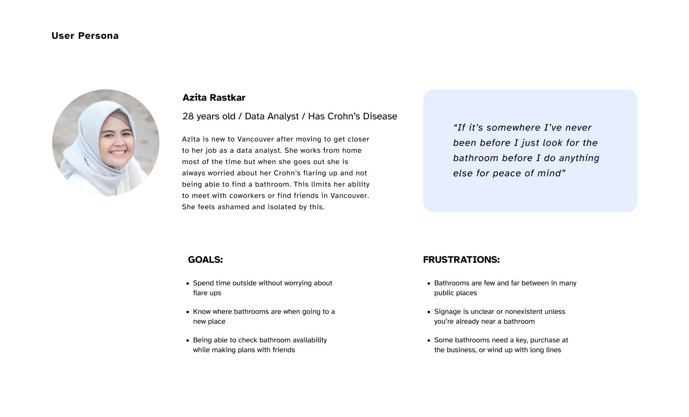
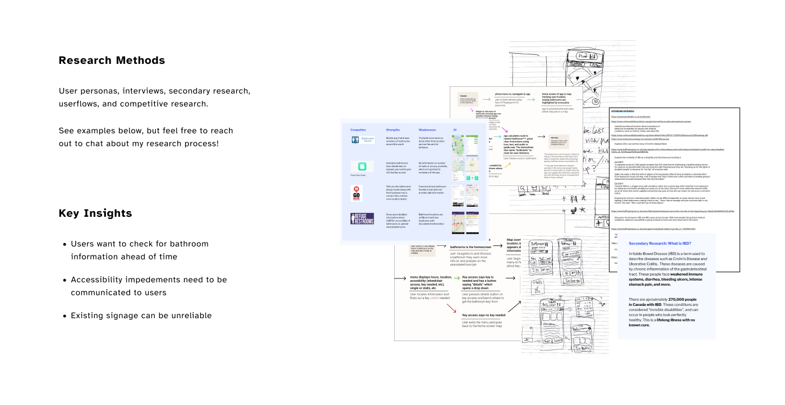
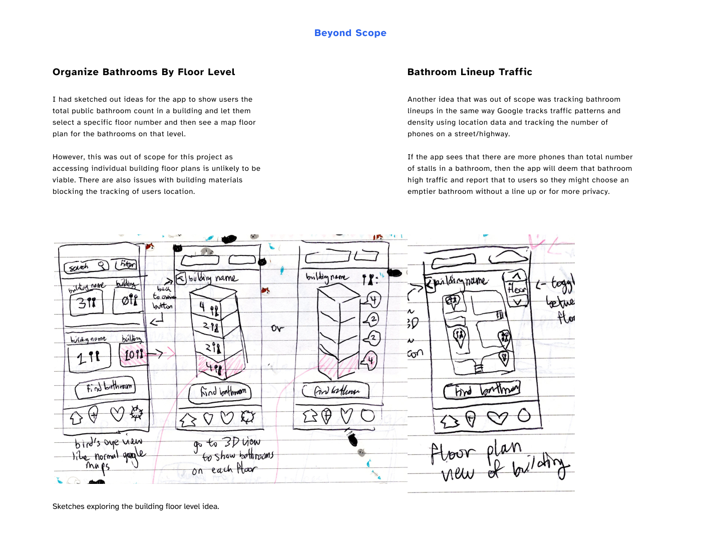

People with Irritable Bowel Disease (IBD) worry constantly about finding a bathroom when they urgently need it. Near Me lets them locate public bathrooms in a hurry. They can go about their daily lives with comfort and confidence. See the full case study here.